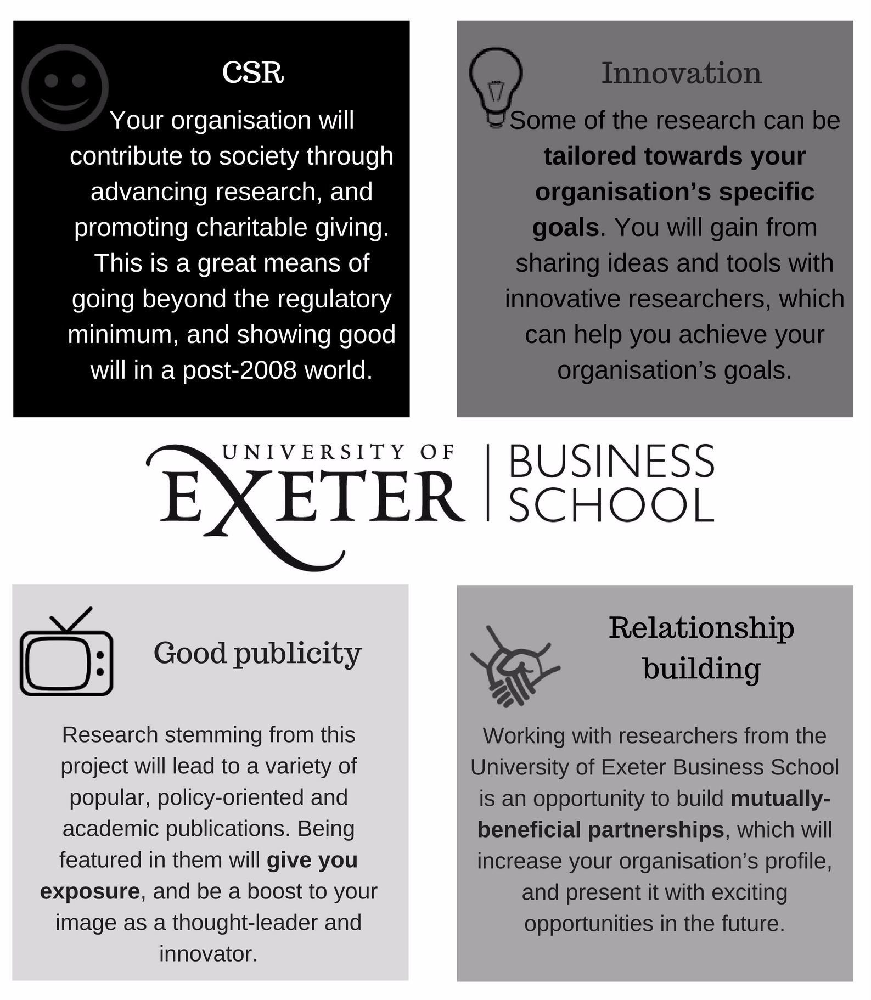
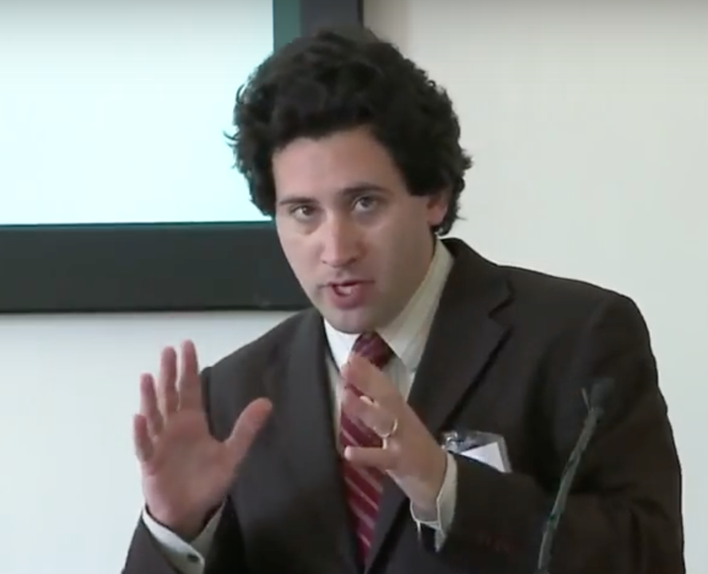

Millions of employees anticipate end-of-year bonuses and performance-dependent income, particularly in finance and sales. Before these are announced many are uncertain of what size reward, if any, they will get. There is evidence from behavioural economics and psychology that people may be especially generous if asked to commit in advance: ‘if you win a bonus, how much will you donate to charity?’, or if asked immediately after they win a bonus. ‘Give if you win’ can help make the bonus culture socially acceptable: when bankers succeed, so will charities: a win-win!
Dr David Reinstein is researching this, and aims to have real-world impact.
Click for more detailsDavid Reinstein is eager to help you implement this, and to test which methods work best for you, your employees, and the charities you care about. Contact him at d.reinstein at exeter.ac.uk to discuss this further. Benefits include:
David Reinstein is a Senior Lecturer in Economics at the University of Exeter Business School. He has conducted and published research on charitable-giving and altruism for over a decade. He is engaging with professional fundraisers, charities, public organisations, financial firms and employers to bring his research to large-scale real-world settings. He is seeking to implement fundraising innovations – such as ‘give if you win’ – in a variety of contexts while rigorously testing their efficacy and impact. He is enthusiastic about facilitating controlled field experiments as well as less formal trials and pilots. More broadly, he is eager to exchange knowledge with non-academic professionals, to discuss and learn more about specific fundraising tools, innovations, and impact.
Millions of employees anticipate end-of-year bonuses, particularly in the financial sector. Before the bonuses are announced many are uncertain whether they will get a bonus, and how large it will be. For example, in 2014-15 UK bonuses totalled £42 billion. In the wake of recent financial turmoil these bonuses are coming under increasing public scrutiny as politicians call on bankers to “palliate their guilt” and give their bonuses to charity. While the banking sector is no stranger to charitable giving it can seem that a celebrity’s $1000 tip will get more public recognition than a $100 million development project. High-profile ‘give if you win’ initiatives may help make the bonus culture more socially acceptable: when bankers succeed, so will charities. This is a win-win situation: bonuses are a ripe target for fundraising, and banks are eager for better press. So how should charities and professional fundraising organisations go about this?
In particular, should they ask bankers in advance to commit a share of ‘their bonus in excess of expectations’ or should they wait and ask until bonuses have been revealed?
There are strong arguments – and significant evidence – that, in certain environments it would be better to ask conditionally, and in advance.
David Reinstein and co-authors have run several experiments to compare differences in charitable giving between two key environments. Participants had a ½ or ¼ chance of winning a (£5 - £20) prize, and asked to donate under one of two conditions, either,
The results were similar in both a lab experiment and a field experiment involving a student employability promotion: Overall, participants committed to donate more in the first condition than in the second condition.
This is consistent with previous behavioural economics work suggesting:
Fundraisers make specific appeals to employees who anticipate an unknown potential bonus being revealed and awarded at a certain time, e.g., 25 December. We will assign employees (randomly) into three groups.
A1: ‘Give from known bonus’: These employees are asked on 10 January, after they know their bonus, to donate a portion of it, to be collected in one week (17 January).
A2: ‘Give known bonus in 3 months’: Asked on 10 January, after bonus is learned, to donate a portion of it, to be collected in three months.
B: ‘Give from unknown bonus in 3 months’: Asked on 10 November (before they know what their bonus will be) to pledge a portion of their unanticipated potential bonus, conditionally on the size of the bonus, to be collected on 17 January. Depending on feasibility, (i) the committed amount could be directly and automatically deducted from any bonus, or (ii) the employee could merely be reminded of their previous commitment after receiving their bonus.
Participating organisations are not expected to contribute directly to fund this pilot. The main source of funding will be an ESRC Impact Acceleration fund.
This can involve any charity that your organisation is supporting and enthusiastic about.
To analyse this properly, we would need only minimally-descriptive data: the group assigned (A1, A2, or B), and the amount donated, from each individual. Any data we would analyse would be stripped of identifying information, and made otherwise unidentifiable.
Yes, David Reinstein and the University of Exeter are eager to speak with your organisation about how you can benefit from this research and this idea, whether or not you are willing to pursue an experiment or a controlled trial.
A range of prominent economists and social scientists have worked with firms, fundraisers, and charitable organisations to investigate and measure ‘what works.’ These have yielded highly interesting and practical results. For example:
Before joining the University of Exeter as a Senior Lecturer in Economics David Reinstein lectured at the University of Essex, where he helped found the ESSExLab and served as Lab Director. He has run laboratory and field experiments in the USA, UK, and Germany, including working with the Behavioural Insights Team, the Brixton Pound, Mid Essex Hospital Services NHS Trust and the HMRC. He has presented this and other research at a variety of venues and conferences, for academic, industry professionals, and policymakers, including the University of Oxford, the EC-JRC Vaccination Workshop, the ESRC ‘Generosity and Well-Being’ workshop 2013, the Royal Economics Society, at the British Academy ‘Nudge and Beyond’ workshop.
Recent work supports several innovative approaches and offers avenues to test, including:
{kind=link}